7 Enhanced regularization
NoteRegularization is key to subsurface imaging
\(\Rightarrow\) Add any information about the subsurface:
- correlation lengths and angles
- structural boundaries (from boreholes, seismics, GPR)
- point information (samples, borehole logs, )
- limits of the possible parameters (e.g. positivity, natural bounds)
7.1 Smoothness constraints
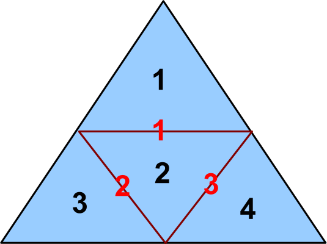
4 model cells, 3 boundaries
1st order derivative \[ \vb C = \mqty(-1 & 1 & 0 & 0\\0 & -1 & 1 & 0\\0 & -1 & 0 & 1) \] can be weighted by
- inverse midpoint distance
- boundary size (length, area)
- information about boundaries
7.2 Anisotropic smoothness
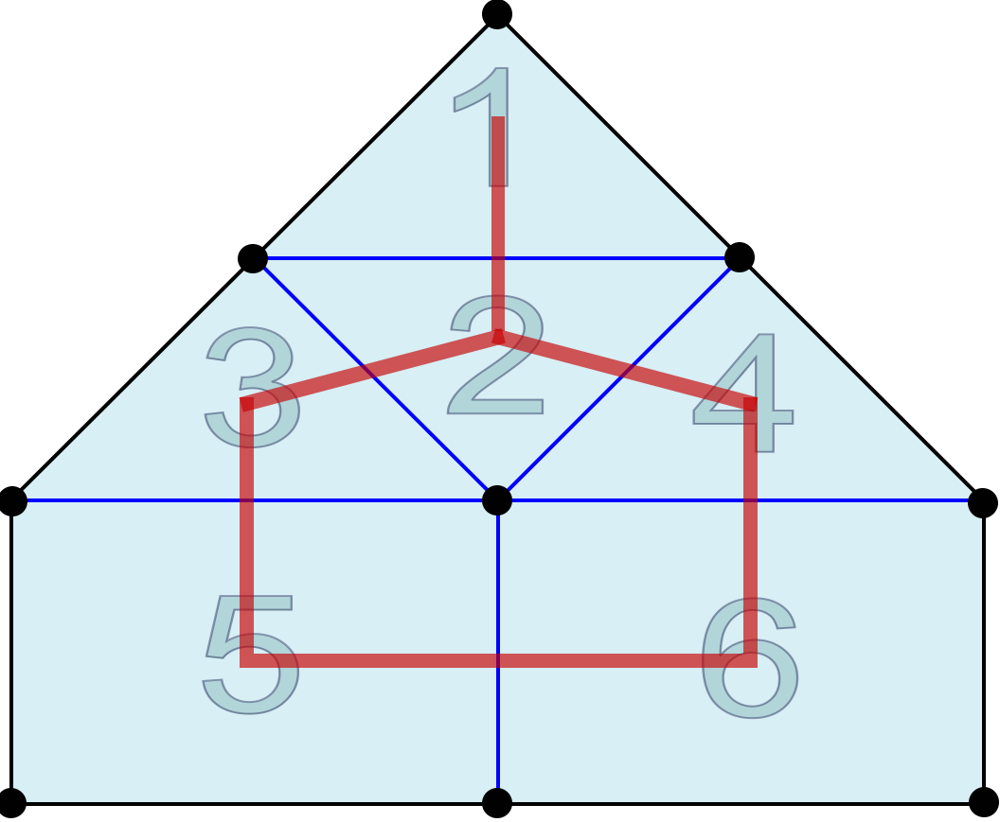
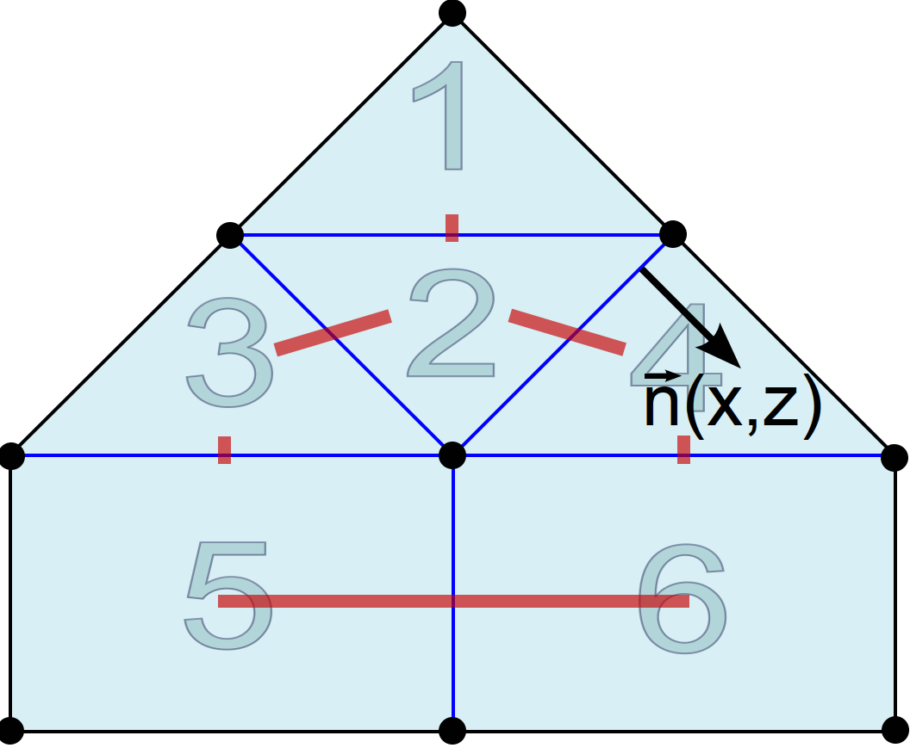
7.3 Structural decoupling
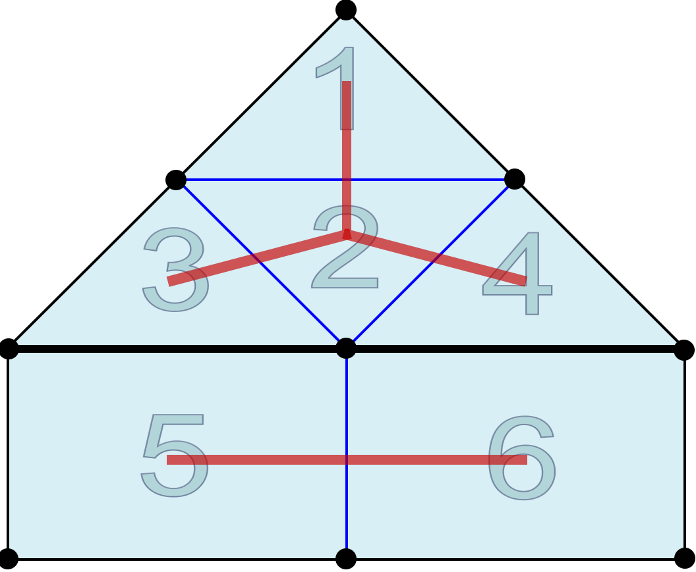
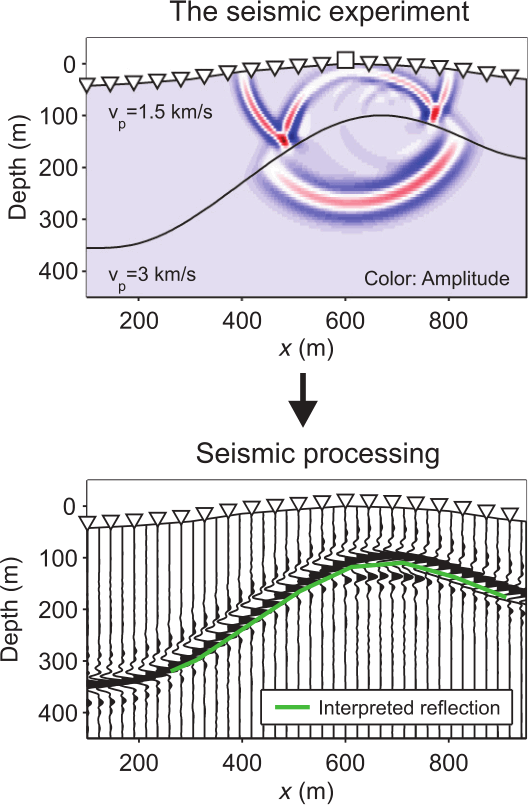
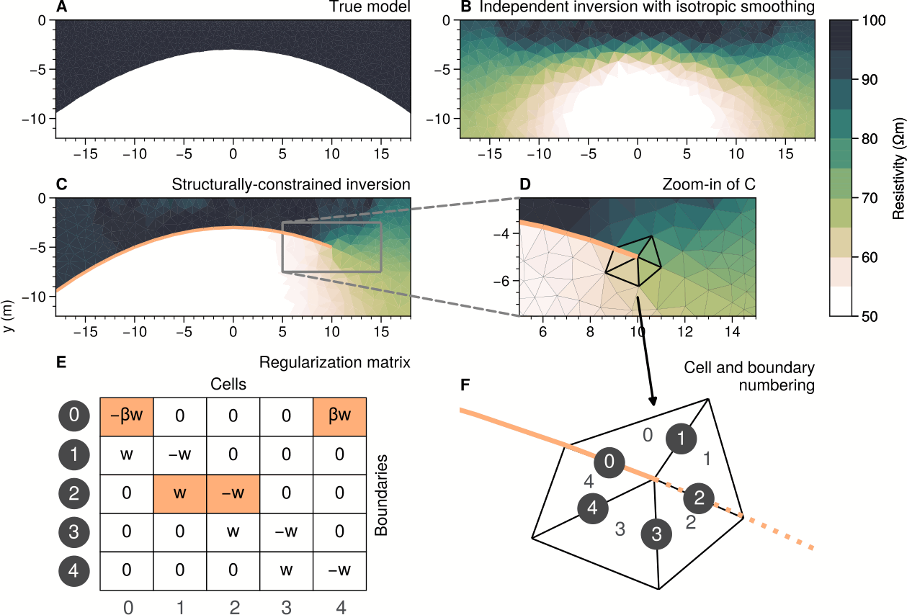
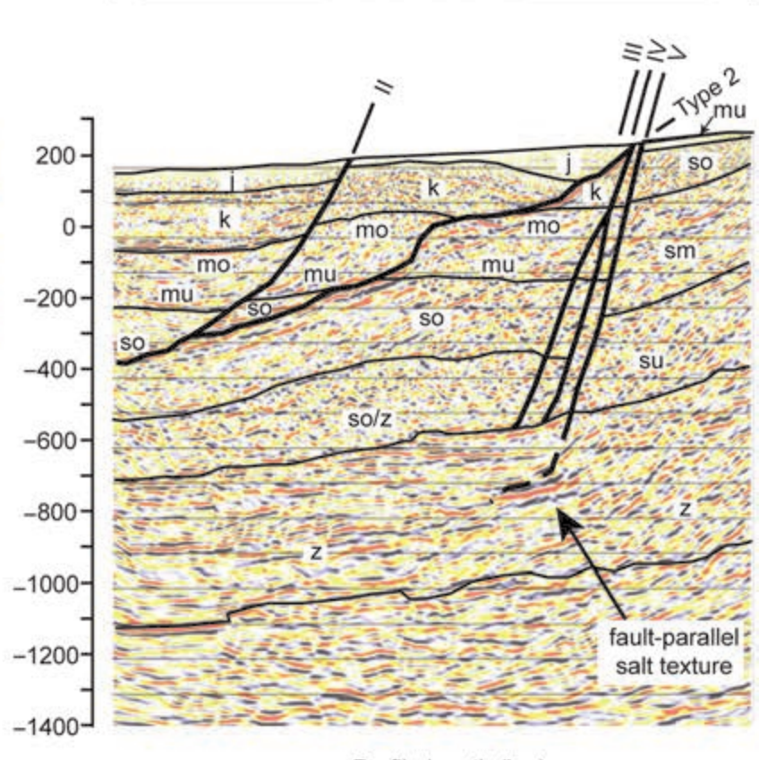
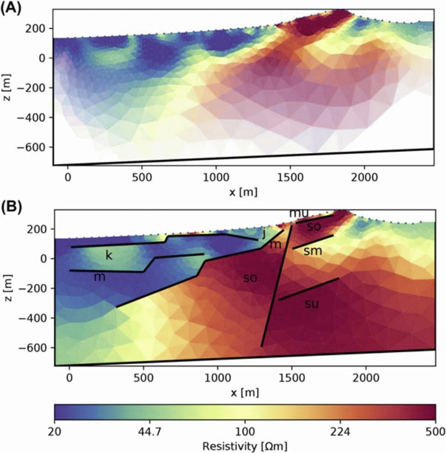
7.4 Selected smoothness
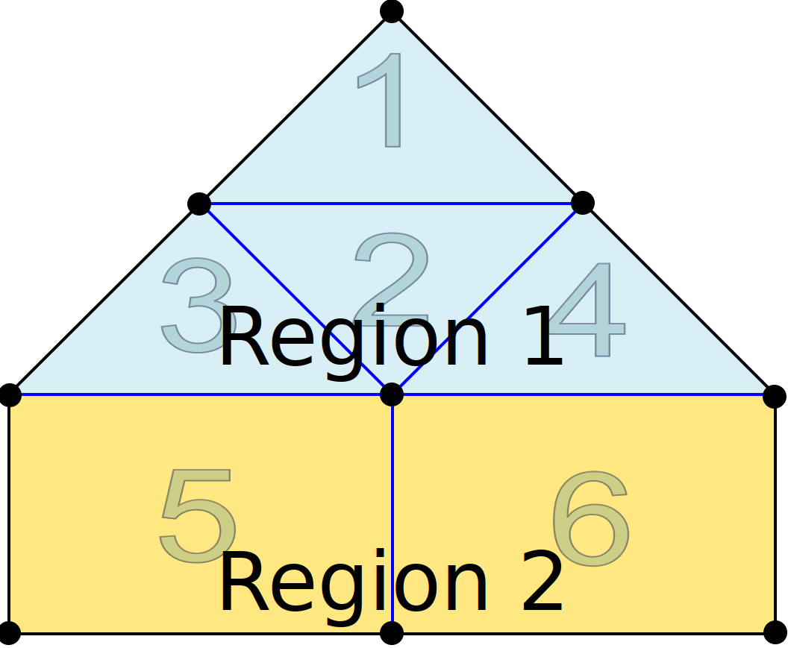
7.5 Model reduction
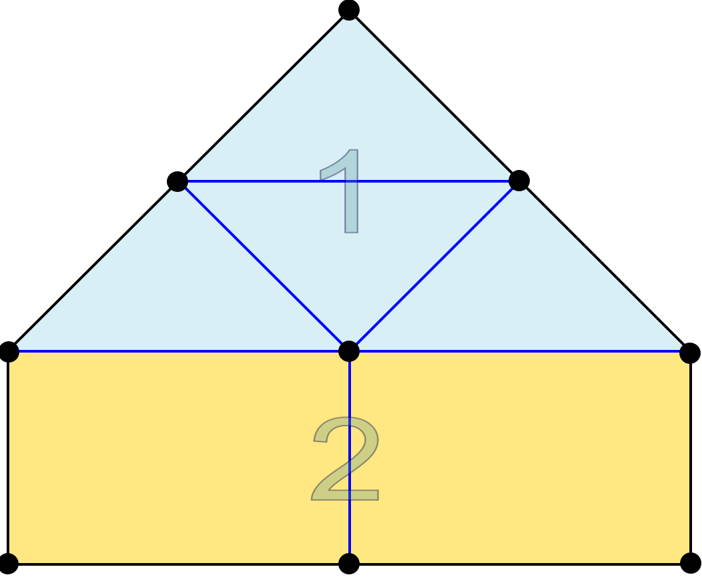
7.6 Region-wise settings
Placement of mesh divided into different regions in greater for
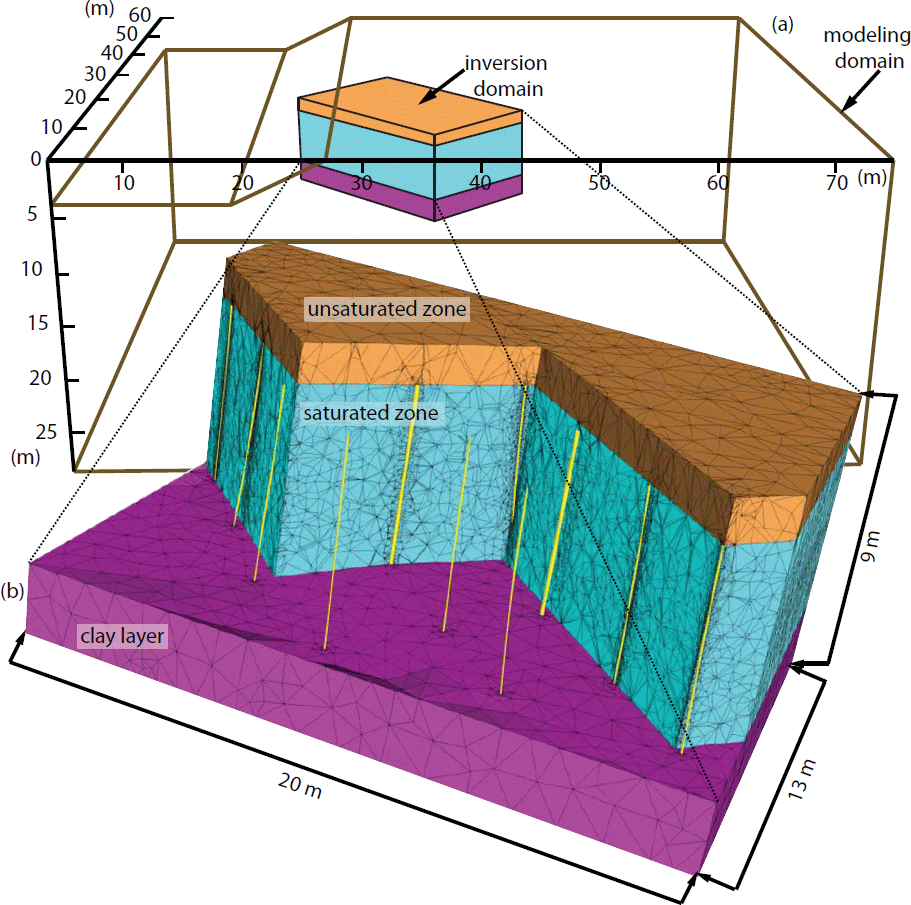
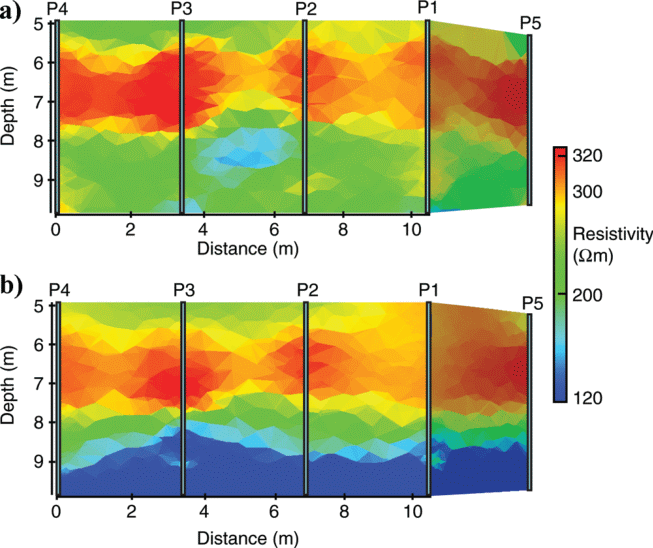
7.7 Geostatistical regularization
\(\vb M_{ij}=\sigma^2\exp(-3\sqrt{\frac{|x_i-x_j|}{I_x}^2+\frac{|y_i-y_j|}{I_y}^2})\quad\Rightarrow\quad \vb C=\vb M^{-0.5}\)
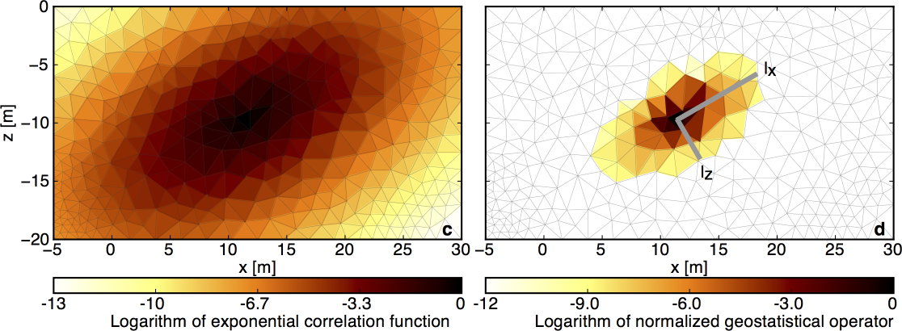
7.8 Geostatistical regularization - example
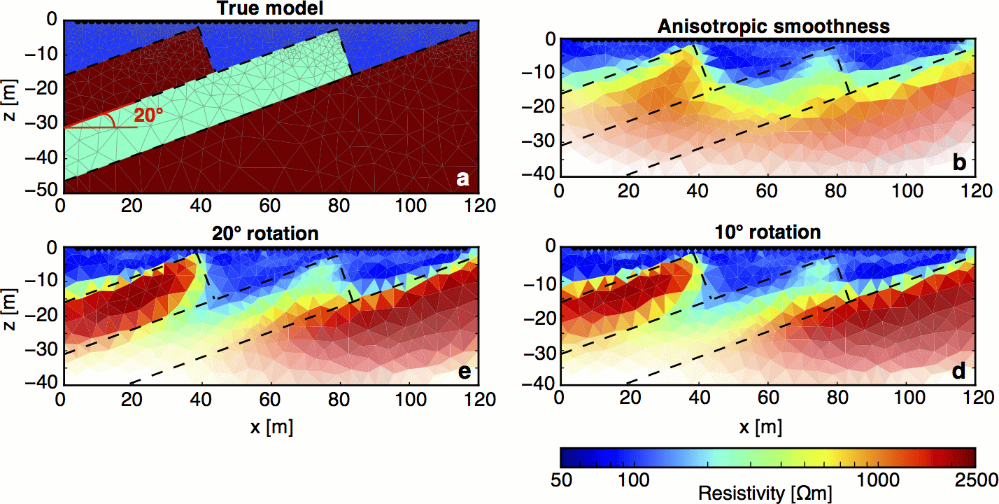
Bergmann P, Ivandic M, Norden B, Rücker C, Kiessling D, Lüth S, Schmidt-Hattenberger C and Juhlin C. 2013. Combination of seismic reflection and constrained resistivity inversion with an application to 4D imaging of the CO2 storage site, ketzin, germany. Geophysics. 79. B37–50
Coscia I, Greenhalgh S, Linde N, Doetsch J, Marescot L, Günther T and Green A. 2011. 3D crosshole apparent resistivity static inversion and monitoring of a coupled river-aquifer system. Geophysics. 76. G49–59
Jordi C, Doetsch J, Günther T, Schmelzbach C and Robertsson J O A. 2018. Geostatistical regularization operators for geophysical inverse problems on irregular meshes. Geophysical Journal International. 213. 1374–86
Tanner D C, Buness H, Igel J, Günther T, Gabriel G, Skiba P, Plenefisch T, Gestermann N and Walter T R. 2020. Chapter 3 - fault detection. Understanding faults ed D Tanner and C Brandes (Elsevier) pp 81–146 Online: http://www.sciencedirect.com/science/article/pii/B9780128159859000035
Wagner F M and Uhlemann S. 2021. Advances in geophysics. Inversion of geophysical data (Elsevier) pp 1–72